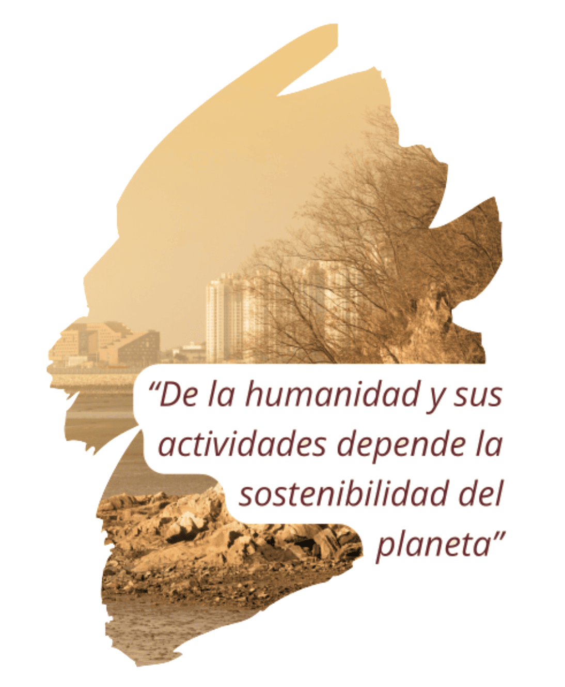

“AÑO DE LA RECUPERACIÓN Y LA CONSOLIDACIÓN
DE LA ECONOMÍA PERUANA”
COLEGIO BILINGÜE
SANTA MARÍA DE LA GRACIA
CAMBIO CLIMÁTICO

2025
¿Qué es el cambio
climático?
Se refiere a los cambios de relevancia que han sufrido los niveles del clima, a nivel de la temperatura, la lluvia y otros aspectos externos, como consecuencia en parte de la actividad humana.

¿Cuáles son las principales
causas del cambio
climático?
Las principales causas del cambio climático se relacionan a actividades como la deforestación (menos absorción en CO2), la emisión de Gases de Efecto Invernadero (GEI), la industrialización, etc.
Efectos y consecuencias
El principal efecto del cambio climático ha sido el cambio drástico de temperaturas en todo el planeta. Dicho cambio ha traído consigo ahora el surgimiento de fenómenos meteorológicos de relevancia, altos niveles de deforestación, pérdida de biodiversidad, entre otros.
¿Qué impactos ha
tenido?
Mayor probabilidad de enfermedades respiratorias, propagación de enfermedades por vectores (mosquitos) como el dengue.
Afecta los ciclos de los cultivos, impactando la sostenibilidad alimentaria.
Los fenómenos meteorológicos atípicos pueden afectar la infraestructura económica.
Medidas para
mitigarlo
- Usar medios de transporte amigables con el medio ambiente.
- Reducir consumo energético.
- Reciclar y reutilizar materiales.
- Fomentar uso de energías alternativas.
- Medidas de reducción de CO2.
- Legislación de conservación.
¿Cómo puedo
contribuir?
El cambio individual, sobre todo a nivel de los patrones de consumo de bienes, el uso de transportes no contaminantes, la reutilización y reciclaje de materiales, entre otras acciones, son de gran relevancia para hacer frente a este fenómeno global.
“Los pequeños cambios hacen una gran diferencia cuando los hacemos todos juntos”
Créditos
Alumno: Sebastián Tupiño Cervantes
Grado: 2do Primaria
Profesora: Mary De la Cruz
Colegio: Colegio Bilingüe Santa María de la Gracia
Año: 2025